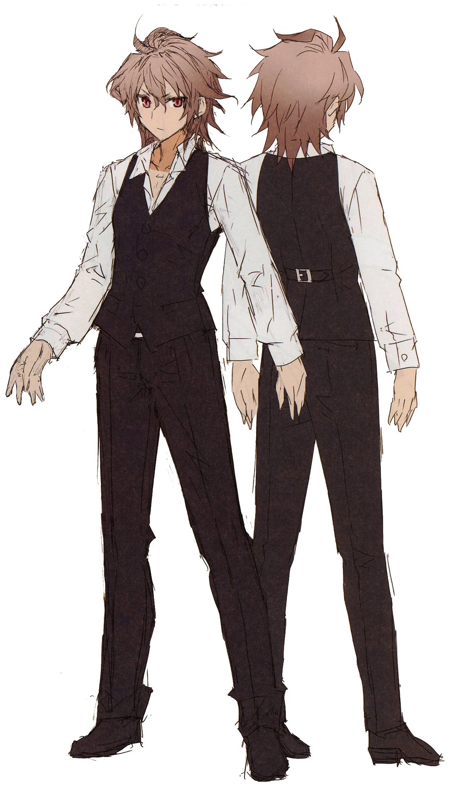

Protagonista da Historia
Historia
Sieg foi criado por Yggdmillennia como um de seus muitos homúnculos adequados para vários propósitos. Inicialmente mantido em um tanque de suprimento de energia mágico desenvolvido por Gordes Musik Yggdmillennia para conceder energia para Servos e era originalmente conhecido como Homunculus
Sieg, originalmente apenas um homúnculo sem nome, começa a ganhar consciência na época em que a Black Faction convocou todos os seus servos. Originalmente, ele está consciente sem a capacidade de formar pensamentos, apenas um "instinto" fraco reagindo à dor. Sem a capacidade de formar pensamentos ou ter reconhecimento de qualquer coisa, ele não poderia se afirmar ou ser verdadeiramente chamado de "vivo". No entanto, ele ainda possuía os sentidos de seu corpo e, com o tempo, recebeu e processou "informações", levando à aquisição de "conhecimento" dentro dele. Ele se torna consciente e é capaz de perceber o simples fato de que é uma criatura viva. O ciclo de aprendizado começa a se repetir em grande velocidade, reforçado por seus Circuitos Mágicos. Ele reconhece muitos seres, incluindo humanos, homúnculos e servos. Os humanos o ignoram, os homúnculos, seus companheiros, o veem com emoções fracas, e os Servos, monstros, exibem uma grande variedade de expressões.
Não há grande mudança em sua situação com a aquisição de conhecimento, mas ele lentamente começa a organizá-lo dentro de si e começa a se sentir estranho com mais informações que obtém. Ele ainda não percebe que é o medo, o desejo de se afastar daquilo que está à sua frente, e ele não consegue nem entender que a emoção é de covardia porque ainda não entendeu a ideia de coragem. Após o reconhecimento de Kairi Sisigou e Saber of Red leva a uma batalha com vários golems de Caster, Caster e Roche Frain Yggdmillennia aparecem diante de Sieg, discutindo o processo de inserção de circuitos mágicos nos golems. Identificando-os por seus "códigos", nomes, Sieg é capaz de reconhecer que eles apareceram diante dele inúmeras vezes e, usando suas informações, é capaz de determinar que a inserção de Circuitos Mágicos equivale à destruição daquilo que é consumido para suprir eles. Não tendo entendido a morte anteriormente, ele fica com medo ao chegar à conclusão de que a destruição é igual à morte.
Como ele é selecionado junto com outros dois para uso de Caster, a parte consciente dele que estava assustada observa que ele morrerá em breve. Embora inicialmente acredite que não há recurso, ele decide agir por poder fazer o que os outros homúnculos não podem, obter informações, pensar e temer a conclusão. Com a coincidência de obter uma identidade junto com a coincidência de ser escolhido para morrer, seu destino começa a se mover quando ele move o braço pela primeira vez em sua vida. Afirmando sua situação enquanto tenta se mover, ele faz com que ambas as mãos se movam para bater contra o vidro reforçado. Percebendo a futilidade em tentar quebrá-lo fisicamente, ele escaneia seus circuitos mágicos para trabalhar um feitiço que enfraquece o vidro o suficiente para ele escapar, quebrando-o e permitindo-lhe entrar no mundo do qual ele estava isolado. Ferido pelo vidro, ele remove seu aparelho respiratório e respira pela primeira vez.
Ele rapidamente se lembra que escapar do vidro era apenas seu objetivo inicial, buscando rapidamente escapar. A capacidade de ficar de pé não estava embutida em suas funções, então ele só pode cair e rastejar debilmente pelo chão. Lentamente conseguindo ficar de pé, ele está cheio de muita dor quando começa seus primeiros passos. Ele não conhece seu caminho, apenas sabendo que morrerá se ficar, e só pode seguir em frente com grande trepidação de mais dor, pois ignora os "sussurros" dos homúnculos atrás dele. Com a pele macia como a de um recém-nascido, simplesmente caminhar é suficiente para sangrar seus pés enquanto ele procura um destino. Pensando ser uma existência sem sentido enquanto seu corpo fraco luta, ele só pode acreditar que morrerá sem sentido da mesma forma que nasceu sem sentido.
Ele faz uma pausa em confusão quando percebe que Rider of Black veio antes dele, incapaz de se mover por medo. Acalmado pela preocupação de Rider, ele reconhece Rider e inconscientemente murmura para Rider ajudá-lo antes de desmaiar. Antes de desaparecer, ele só deseja que continue vivo. Rider decide ajudá-lo, trazendo-lhe o quarto de Archer of Black para escondê-lo da perseguição de Caster. Archer percebe a situação, deixando-os entrar e se preparando para examiná-lo devido à sua experiência em medicina. Ele afirma que Sieg usou demais seus circuitos e rasgou suas veias ao destruir o vidro e desmaiou ainda mais de exaustão. Ele conta a condição física e curta vida de Rider de Sieg, e Rider afirma que continuará ajudando-o até o fim, pois ele não seria capaz de sobreviver sozinho.
Sieg acorda durante a conversa, então ele se levanta com o estímulo de Rider. Extremamente nervoso, ele é incapaz de entender o significado de Rider enquanto pergunta sobre ajudar a conceder o desejo de Sieg. Enquanto ele pensa sobre isso, ele acredita que um ser impotente sem história não tem equipamento
Ele colide com Saber of Red durante uma grande batalha. Ela o chama de Espírito Heroico falso, e ele reconhece que não pode se igualar a um Espírito Heroico adequado. A fim de salvar seus companheiros que foram deixados para trás, ele decide utilizar o Noble Phantasm de seu Saber, Balmung, colidindo com seu Clarent. Ele não se importa em ganhar ou perder, apenas que é uma ação necessária. Aquele que não tem uma vida em primeiro lugar, portanto, não pode ser dito que está arriscando sua vida. Red Saber sai vitorioso, mas apenas devido às propriedades especiais das armas e à distância de que atacaram. É possível utilizar Balmung mesmo alguns passos mais perto pode ter mudado o resultado. Ela está furiosa porque ele ainda vive e se move para acabar com ele.